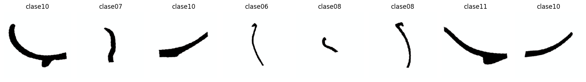
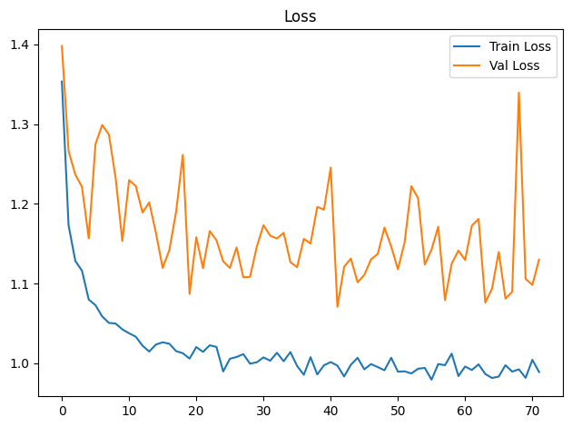
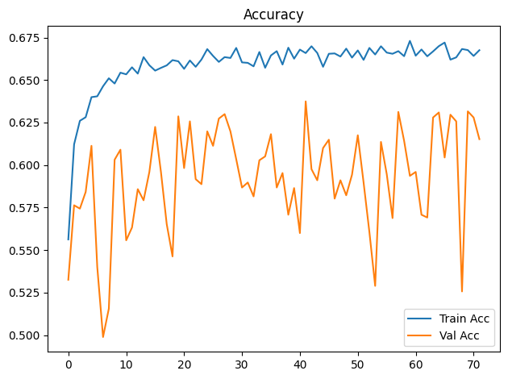
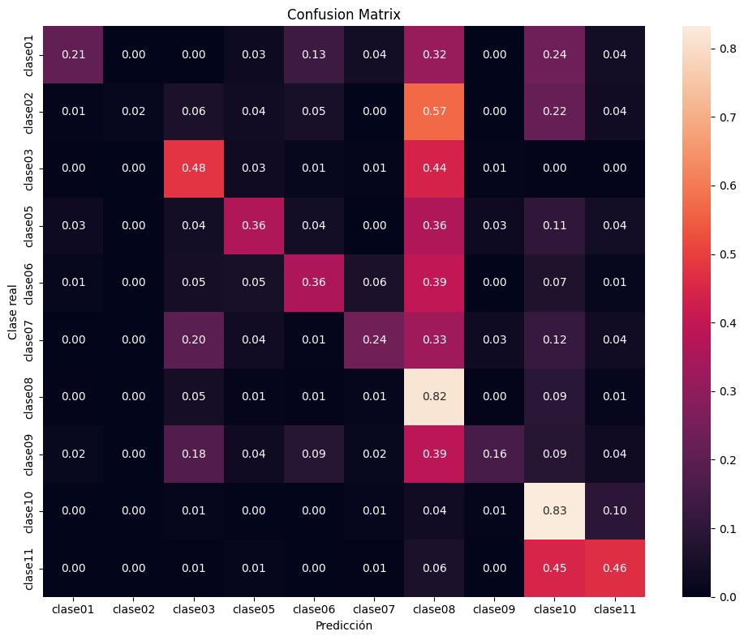

Dispositivo utilizado para procesamiento: CUDA - NVIDIA GeForce GTX 1650Entrenamiento de CNN ResNet-18 con Transfer Learning
Objetivos
- Construir un modelo baseline de clasificación mediante transfer learning con ResNet18 preentrenada.
- Entrenar inicialmente solo la capa clasificadora y descongelar
layer4enUNFREEZE_EPOCHcon una tasa de aprendizaje menor. - Aplicar transformaciones y aumentación de datos al conjunto de entrenamiento.
- Entrenar y validar el modelo registrando loss y accuracy por época.
- Detener el entrenamiento si val_loss no mejora suficientemente durante la paciencia configurada.
- Evaluar el modelo de la mejor época de validación sobre el conjunto de prueba.
- Analizar los resultados mediante accuracy, precision, recall, F1-score, reporte de clasificación y matriz de confusión normalizada.
- Guardar los pesos restaurados de la mejor época de validación (o los finales si se desactiva la parada anticipada).
Dispositivo para procesamiento
División de datos
La pertenencia de cada imagen a train, val o test se lee de la metadata generada por el notebook de división. La relación se realiza mediante ruta_relativa; por tanto, el split no se recalcula aunque cambien la semilla o los parámetros del entrenamiento.
Dataset seleccionado: unificado
Directorio de datos: /home/rafael/Dev/vasijas/data/12.unificado_divididos_en_train_val_y_test
Metadata de split: data/12.unificado_divididos_en_train_val_y_test/metadata.csv
Clases: clase01 clase02 clase03 clase05 clase06 clase07 clase08 clase09 clase10 clase11
Split persistido -> train: 14231, val: 3059, test: 3059
Epoch 1/300
Train Loss: 1.3533 | Train Acc: 0.5563 | Val Loss: 1.3978 | Val Acc: 0.5325
Tiempo de epoch: 0:01:25.877884
Epoch 2/300
Train Loss: 1.1730 | Train Acc: 0.6122 | Val Loss: 1.2661 | Val Acc: 0.5763
Tiempo de epoch: 0:01:23.418099
Epoch 3/300
Train Loss: 1.1284 | Train Acc: 0.6260 | Val Loss: 1.2367 | Val Acc: 0.5744
Tiempo de epoch: 0:01:23.490270
Epoch 4/300
Train Loss: 1.1159 | Train Acc: 0.6281 | Val Loss: 1.2210 | Val Acc: 0.5842
Tiempo de epoch: 0:01:23.518037
Epoch 5/300
Train Loss: 1.0799 | Train Acc: 0.6399 | Val Loss: 1.1565 | Val Acc: 0.6113
Tiempo de epoch: 0:01:24.007384
Epoch 6/300
Train Loss: 1.0728 | Train Acc: 0.6404 | Val Loss: 1.2747 | Val Acc: 0.5400
Tiempo de epoch: 0:01:24.084347
Epoch 7/300
Train Loss: 1.0587 | Train Acc: 0.6463 | Val Loss: 1.2988 | Val Acc: 0.4989
Tiempo de epoch: 0:01:24.122326
Epoch 8/300
Train Loss: 1.0506 | Train Acc: 0.6510 | Val Loss: 1.2868 | Val Acc: 0.5155
Tiempo de epoch: 0:01:24.146359
Epoch 9/300
Train Loss: 1.0498 | Train Acc: 0.6480 | Val Loss: 1.2324 | Val Acc: 0.6031
Tiempo de epoch: 0:01:24.175599
Epoch 10/300
Train Loss: 1.0425 | Train Acc: 0.6543 | Val Loss: 1.1534 | Val Acc: 0.6090
Tiempo de epoch: 0:01:24.044273
Epoch 11/300
Train Loss: 1.0376 | Train Acc: 0.6534 | Val Loss: 1.2297 | Val Acc: 0.5557
Tiempo de epoch: 0:01:24.210231
Epoch 12/300
Train Loss: 1.0333 | Train Acc: 0.6575 | Val Loss: 1.2223 | Val Acc: 0.5633
Tiempo de epoch: 0:01:24.149081
Epoch 13/300
Train Loss: 1.0220 | Train Acc: 0.6538 | Val Loss: 1.1890 | Val Acc: 0.5858
Tiempo de epoch: 0:01:24.245821
Epoch 14/300
Train Loss: 1.0146 | Train Acc: 0.6635 | Val Loss: 1.2017 | Val Acc: 0.5793
Tiempo de epoch: 0:01:24.209694
Epoch 15/300
Train Loss: 1.0235 | Train Acc: 0.6587 | Val Loss: 1.1633 | Val Acc: 0.5959
Tiempo de epoch: 0:01:24.181068
Epoch 16/300
Train Loss: 1.0263 | Train Acc: 0.6555 | Val Loss: 1.1195 | Val Acc: 0.6224
Tiempo de epoch: 0:01:24.240526
Epoch 17/300
Train Loss: 1.0244 | Train Acc: 0.6572 | Val Loss: 1.1422 | Val Acc: 0.5959
Tiempo de epoch: 0:01:24.186621
Epoch 18/300
Train Loss: 1.0152 | Train Acc: 0.6586 | Val Loss: 1.1901 | Val Acc: 0.5652
Tiempo de epoch: 0:01:24.218102
Epoch 19/300
Train Loss: 1.0126 | Train Acc: 0.6617 | Val Loss: 1.2613 | Val Acc: 0.5463
Tiempo de epoch: 0:01:24.275623
Epoch 20/300
Train Loss: 1.0058 | Train Acc: 0.6610 | Val Loss: 1.0869 | Val Acc: 0.6286
Tiempo de epoch: 0:01:24.110234
Epoch 21/300
Train Loss: 1.0203 | Train Acc: 0.6566 | Val Loss: 1.1580 | Val Acc: 0.5982
Tiempo de epoch: 0:01:24.151428
Epoch 22/300
Train Loss: 1.0143 | Train Acc: 0.6615 | Val Loss: 1.1191 | Val Acc: 0.6257
Tiempo de epoch: 0:01:24.207072
Epoch 23/300
Train Loss: 1.0225 | Train Acc: 0.6578 | Val Loss: 1.1658 | Val Acc: 0.5917
Tiempo de epoch: 0:01:24.252444
Epoch 24/300
Train Loss: 1.0205 | Train Acc: 0.6621 | Val Loss: 1.1543 | Val Acc: 0.5888
Tiempo de epoch: 0:01:24.126229
Epoch 25/300
Train Loss: 0.9897 | Train Acc: 0.6682 | Val Loss: 1.1278 | Val Acc: 0.6198
Tiempo de epoch: 0:01:24.112969
Epoch 26/300
Train Loss: 1.0056 | Train Acc: 0.6642 | Val Loss: 1.1195 | Val Acc: 0.6113
Tiempo de epoch: 0:01:24.245627
Epoch 27/300
Train Loss: 1.0078 | Train Acc: 0.6607 | Val Loss: 1.1452 | Val Acc: 0.6273
Tiempo de epoch: 0:01:24.106518
Epoch 28/300
Train Loss: 1.0115 | Train Acc: 0.6635 | Val Loss: 1.1077 | Val Acc: 0.6299
Tiempo de epoch: 0:01:24.273196
Epoch 29/300
Train Loss: 0.9994 | Train Acc: 0.6630 | Val Loss: 1.1083 | Val Acc: 0.6198
Tiempo de epoch: 0:01:24.210580
Epoch 30/300
Train Loss: 1.0012 | Train Acc: 0.6689 | Val Loss: 1.1461 | Val Acc: 0.6035
Tiempo de epoch: 0:01:24.136728
Epoch 31/300
Train Loss: 1.0073 | Train Acc: 0.6604 | Val Loss: 1.1731 | Val Acc: 0.5868
Tiempo de epoch: 0:01:24.356333
Epoch 32/300
Train Loss: 1.0031 | Train Acc: 0.6601 | Val Loss: 1.1599 | Val Acc: 0.5897
Tiempo de epoch: 0:01:24.274473
Epoch 33/300
Train Loss: 1.0132 | Train Acc: 0.6581 | Val Loss: 1.1565 | Val Acc: 0.5816
Tiempo de epoch: 0:01:24.158435
Epoch 34/300
Train Loss: 1.0025 | Train Acc: 0.6665 | Val Loss: 1.1636 | Val Acc: 0.6028
Tiempo de epoch: 0:01:24.213554
Epoch 35/300
Train Loss: 1.0140 | Train Acc: 0.6572 | Val Loss: 1.1268 | Val Acc: 0.6051
Tiempo de epoch: 0:01:24.078535
Epoch 36/300
Train Loss: 0.9966 | Train Acc: 0.6645 | Val Loss: 1.1205 | Val Acc: 0.6182
Tiempo de epoch: 0:01:24.259567
Epoch 37/300
Train Loss: 0.9855 | Train Acc: 0.6670 | Val Loss: 1.1560 | Val Acc: 0.5868
Tiempo de epoch: 0:01:24.203472
Epoch 38/300
Train Loss: 1.0076 | Train Acc: 0.6591 | Val Loss: 1.1501 | Val Acc: 0.5953
Tiempo de epoch: 0:01:24.232893
Epoch 39/300
Train Loss: 0.9859 | Train Acc: 0.6690 | Val Loss: 1.1960 | Val Acc: 0.5708
Tiempo de epoch: 0:01:24.049326
Epoch 40/300
Train Loss: 0.9975 | Train Acc: 0.6626 | Val Loss: 1.1927 | Val Acc: 0.5865
Tiempo de epoch: 0:01:24.218293
Epoch 41/300
Train Loss: 1.0015 | Train Acc: 0.6679 | Val Loss: 1.2453 | Val Acc: 0.5600
Tiempo de epoch: 0:01:24.064698
Epoch 42/300
Train Loss: 0.9970 | Train Acc: 0.6659 | Val Loss: 1.0707 | Val Acc: 0.6375
Tiempo de epoch: 0:01:24.145192
Epoch 43/300
Train Loss: 0.9834 | Train Acc: 0.6699 | Val Loss: 1.1210 | Val Acc: 0.5976
Tiempo de epoch: 0:01:24.278869
Epoch 44/300
Train Loss: 0.9981 | Train Acc: 0.6659 | Val Loss: 1.1313 | Val Acc: 0.5910
Tiempo de epoch: 0:01:24.255646
Epoch 45/300
Train Loss: 1.0068 | Train Acc: 0.6578 | Val Loss: 1.1015 | Val Acc: 0.6100
Tiempo de epoch: 0:01:24.158088
Epoch 46/300
Train Loss: 0.9924 | Train Acc: 0.6654 | Val Loss: 1.1107 | Val Acc: 0.6149
Tiempo de epoch: 0:01:24.379620
Epoch 47/300
Train Loss: 0.9989 | Train Acc: 0.6657 | Val Loss: 1.1303 | Val Acc: 0.5803
Tiempo de epoch: 0:01:24.227020
Epoch 48/300
Train Loss: 0.9952 | Train Acc: 0.6638 | Val Loss: 1.1371 | Val Acc: 0.5910
Tiempo de epoch: 0:01:24.112740
Epoch 49/300
Train Loss: 0.9912 | Train Acc: 0.6685 | Val Loss: 1.1701 | Val Acc: 0.5822
Tiempo de epoch: 0:01:24.156214
Epoch 50/300
Train Loss: 1.0068 | Train Acc: 0.6632 | Val Loss: 1.1464 | Val Acc: 0.5943
Tiempo de epoch: 0:01:24.045963
Epoch 51/300
Train Loss: 0.9894 | Train Acc: 0.6674 | Val Loss: 1.1178 | Val Acc: 0.6175
Tiempo de epoch: 0:01:24.247056
Epoch 52/300
Train Loss: 0.9899 | Train Acc: 0.6619 | Val Loss: 1.1517 | Val Acc: 0.5897
Tiempo de epoch: 0:01:24.327039
Epoch 53/300
Train Loss: 0.9872 | Train Acc: 0.6689 | Val Loss: 1.2220 | Val Acc: 0.5606
Tiempo de epoch: 0:01:24.273301
Epoch 54/300
Train Loss: 0.9931 | Train Acc: 0.6650 | Val Loss: 1.2069 | Val Acc: 0.5289
Tiempo de epoch: 0:01:24.175602
Epoch 55/300
Train Loss: 0.9941 | Train Acc: 0.6699 | Val Loss: 1.1237 | Val Acc: 0.6136
Tiempo de epoch: 0:01:24.303897
Epoch 56/300
Train Loss: 0.9794 | Train Acc: 0.6662 | Val Loss: 1.1426 | Val Acc: 0.5946
Tiempo de epoch: 0:01:24.108573
Epoch 57/300
Train Loss: 0.9990 | Train Acc: 0.6654 | Val Loss: 1.1712 | Val Acc: 0.5688
Tiempo de epoch: 0:01:24.120601
Epoch 58/300
Train Loss: 0.9975 | Train Acc: 0.6670 | Val Loss: 1.0792 | Val Acc: 0.6313
Tiempo de epoch: 0:01:24.205254
Epoch 59/300
Train Loss: 1.0120 | Train Acc: 0.6640 | Val Loss: 1.1249 | Val Acc: 0.6143
Tiempo de epoch: 0:01:24.165873
Epoch 60/300
Train Loss: 0.9839 | Train Acc: 0.6730 | Val Loss: 1.1412 | Val Acc: 0.5937
Tiempo de epoch: 0:01:24.322118
Epoch 61/300
Train Loss: 0.9958 | Train Acc: 0.6643 | Val Loss: 1.1294 | Val Acc: 0.5959
Tiempo de epoch: 0:01:24.269321
Epoch 62/300
Train Loss: 0.9915 | Train Acc: 0.6680 | Val Loss: 1.1726 | Val Acc: 0.5708
Tiempo de epoch: 0:01:24.217054
Epoch 63/300
Train Loss: 0.9986 | Train Acc: 0.6640 | Val Loss: 1.1810 | Val Acc: 0.5691
Tiempo de epoch: 0:01:24.255409
Epoch 64/300
Train Loss: 0.9865 | Train Acc: 0.6669 | Val Loss: 1.0760 | Val Acc: 0.6280
Tiempo de epoch: 0:01:24.219221
Epoch 65/300
Train Loss: 0.9815 | Train Acc: 0.6699 | Val Loss: 1.0935 | Val Acc: 0.6309
Tiempo de epoch: 0:01:24.445173
Epoch 66/300
Train Loss: 0.9832 | Train Acc: 0.6721 | Val Loss: 1.1395 | Val Acc: 0.6044
Tiempo de epoch: 0:01:24.234825
Epoch 67/300
Train Loss: 0.9975 | Train Acc: 0.6620 | Val Loss: 1.0811 | Val Acc: 0.6296
Tiempo de epoch: 0:01:24.512105
Epoch 68/300
Train Loss: 0.9895 | Train Acc: 0.6633 | Val Loss: 1.0895 | Val Acc: 0.6257
Tiempo de epoch: 0:01:24.239023
Epoch 69/300
Train Loss: 0.9924 | Train Acc: 0.6683 | Val Loss: 1.3395 | Val Acc: 0.5257
Tiempo de epoch: 0:01:24.125771
Epoch 70/300
Train Loss: 0.9817 | Train Acc: 0.6676 | Val Loss: 1.1059 | Val Acc: 0.6316
Tiempo de epoch: 0:01:24.438505
Epoch 71/300
Train Loss: 1.0043 | Train Acc: 0.6642 | Val Loss: 1.0982 | Val Acc: 0.6280
Tiempo de epoch: 0:01:24.129668
Epoch 72/300
Train Loss: 0.9890 | Train Acc: 0.6676 | Val Loss: 1.1300 | Val Acc: 0.6152
Tiempo de epoch: 0:01:24.136236
Parada anticipada en epoch 72: 30 épocas sin mejora suficiente de val_loss.
Se restauran los pesos de epoch 42 (val_loss=1.0707).
Tiempo total de entrenamiento: 1:41:02.105968

Test Acc: 0.6267
precision recall f1-score support
clase01 0.55 0.21 0.30 76
clase02 1.00 0.02 0.03 133
clase03 0.48 0.48 0.48 209
clase05 0.58 0.36 0.45 152
clase06 0.59 0.36 0.44 152
clase07 0.47 0.24 0.32 133
clase08 0.60 0.82 0.69 798
clase09 0.28 0.16 0.20 57
clase10 0.72 0.83 0.77 1007
clase11 0.55 0.46 0.50 342
accuracy 0.63 3059
macro avg 0.58 0.39 0.42 3059
weighted avg 0.63 0.63 0.60 3059

Modelo guardado en: output/models/model_resnet18_unificado_bs16_lr1e-3_base.pth